Machine Learning
General
Machine Learning: a probabilistic perspective by Kevin Murphy
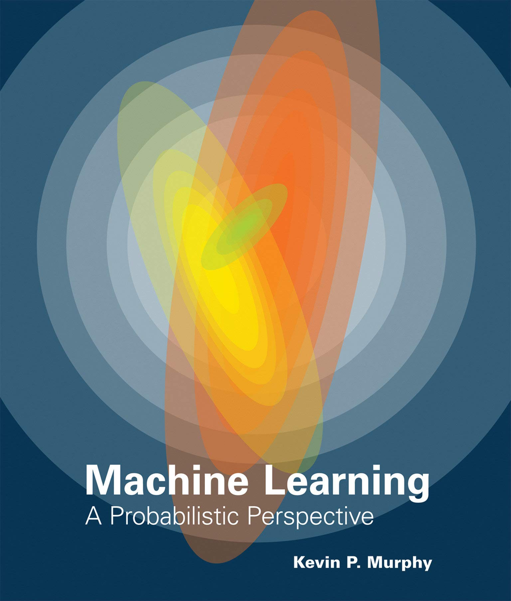
Gaussian Processes for Machine Learning by Carl Edward Rasmussen, Christopher Williams
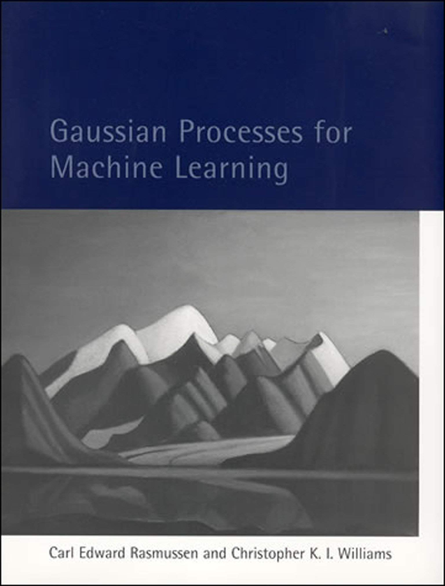
The Elements of Statistical Learning by Trevor Hastie, Robert Tibshirani, Jerome Friedman
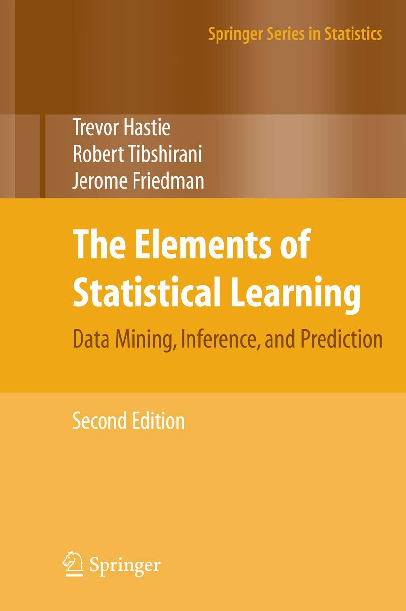
Information Theory, Inference and Learning Algorithms by David J. C. MacKay
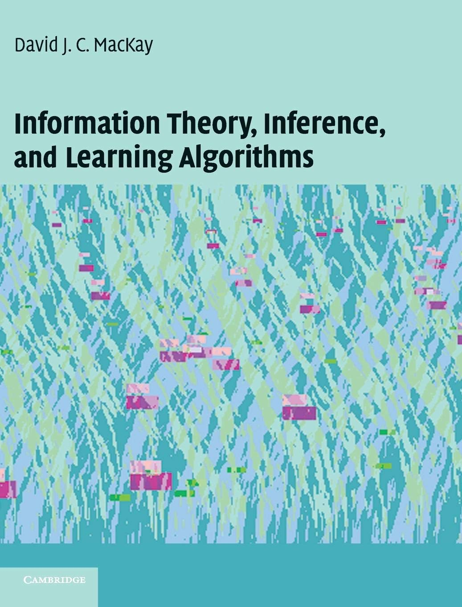
Probabilistic Numerics: Computation as Machine Learning by Philipp Hennig , Michael A. Osborne , Hans P. Kersting
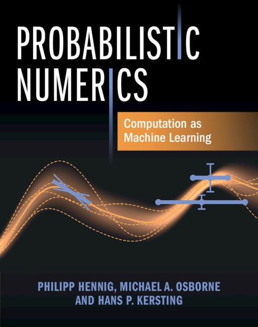
Deep learning
Deep Learning with Python by François Chollet

Deep Learning by Ian Goodfellow, Yoshua Bengio, Aaron Courville

Reinforcement learning
Reinforcement Learning, second edition: An Introduction by Richard Sutton, Andrew Barto
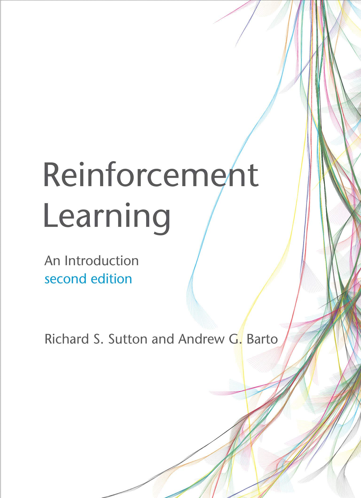
Statistics
A First Look At Rigorous Probability Theory by Jeffrey S Rosenthal
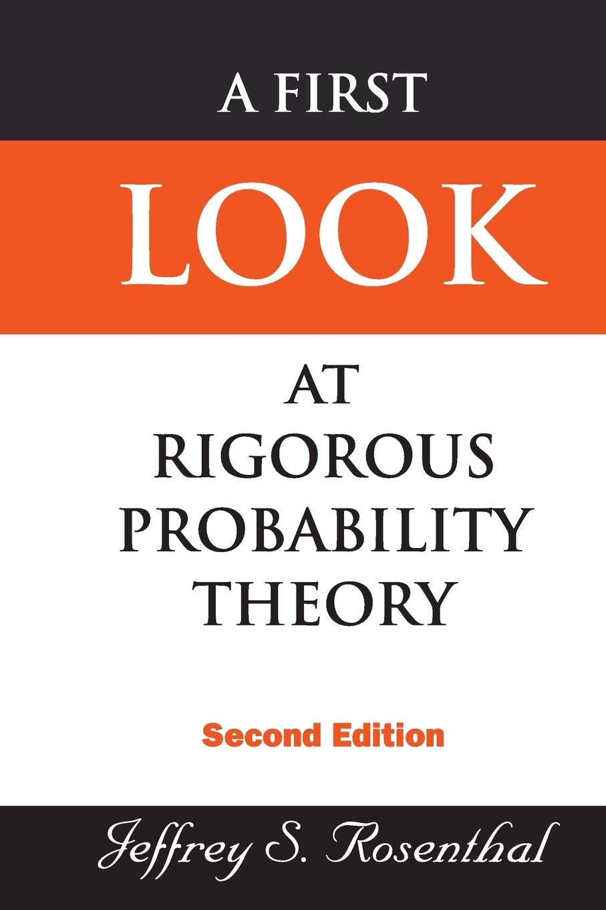
Probability and Random Processes by Geoffrey Grimmett, David Stirzaker
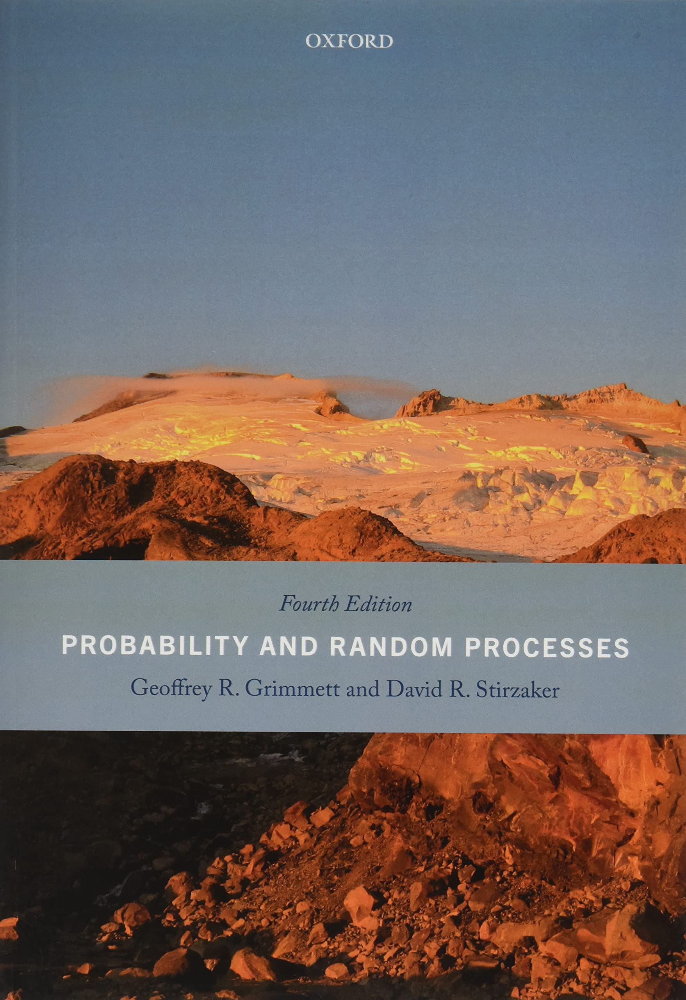
A User's Guide to Measure Theoretic Probability by David Pollard
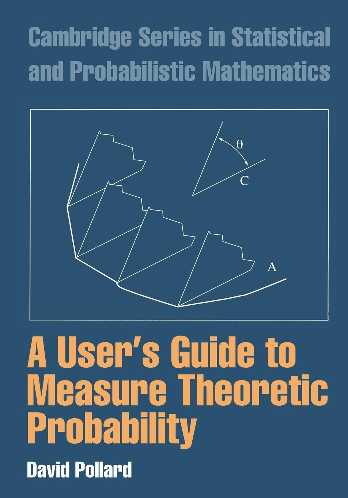
Doing Bayesian Data Analysis: A Tutorial with R, JAGS, and Stan by John Kruschke
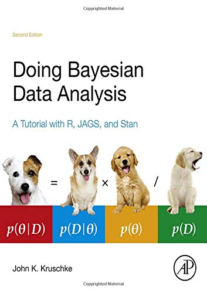
Bayesian Data Analysis, Third Edition by Andrew Gelman , John B. Carlin, Hal Stern, David Dunson, Aki Vehtari, Donald Rubin
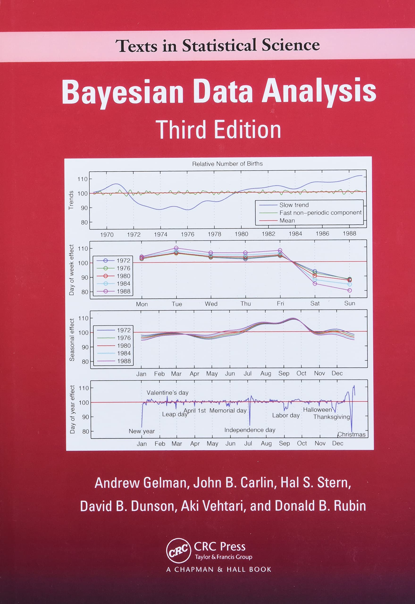
Regression and other stories by Andrew Gelman, Jennifer Hill, Aki Vehtari
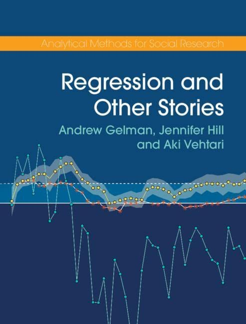
Statistical Rethinking by Richard McElrath

Bayesian Modeling and Computation in Python by Osvaldo A. Martin, Ravin Kumar, Junpeng Lao
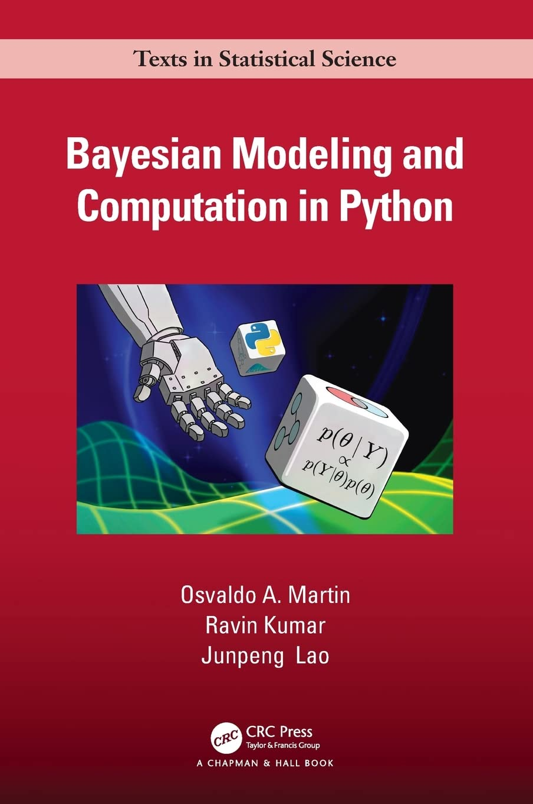
Introduction to Sequential Monte Carlo by Nicolas Chopin, Omiros Papaspiliopoulos